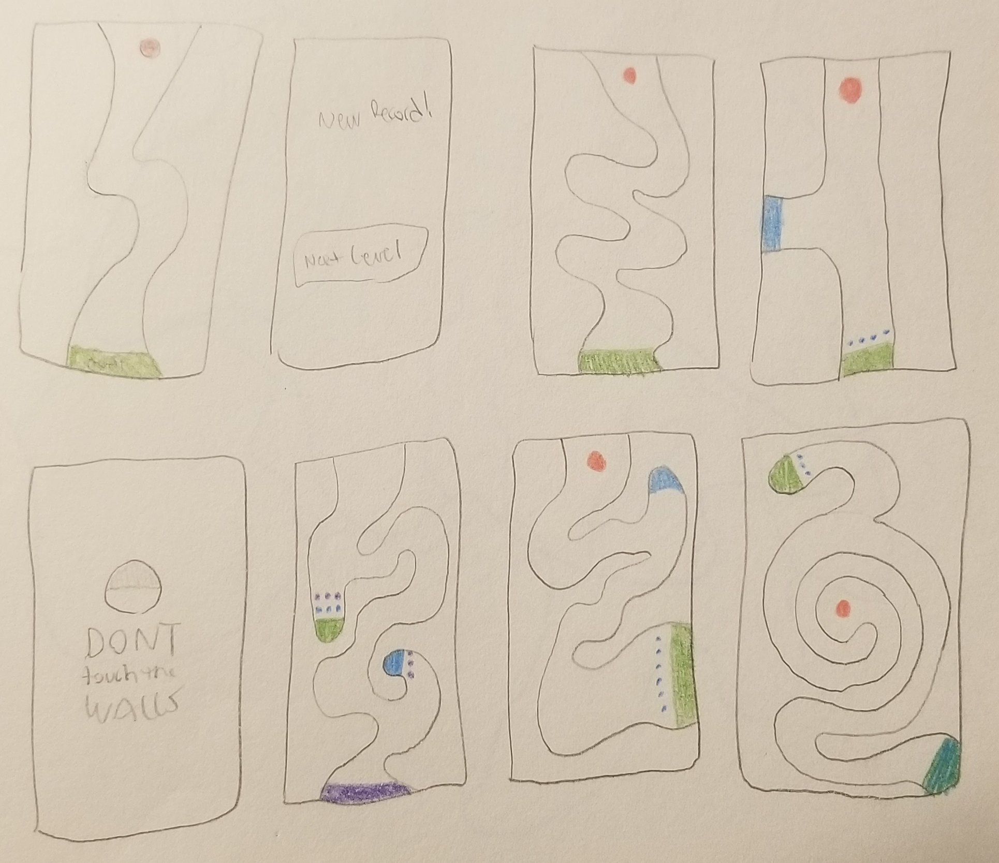

Project Summary
'Don't touch the walls' is a JavaScript maze game made with p5js. The player controls the ball by tilting their phone, and the accelerometer adjusts the position of the ball depending on the orientation. The goal of the game is to get to the green square as fast as possible.
Creative Process
When designing the game, I began the process by drawing out low fidelity mock-ups for level ideas.

I knew that writing JavaScript to draw the level boundaries wouldn't be the best option for fine control over level design, so I decided to draw vector images of each level using Figma. Each level in the game is a simple SVG image loaded into the background, and the collision detection is handled by grabbing the color of the surface that the ball is currently on top of. Smaller design decisions like the smearing effect were meant to act as a sort of indicator for the player to feel the momentum of the ball a bit better. As the player progresses, gates begin to show up blocking the goal, so the player must open the gates by overcoming obstacles and finding switches. This decision was made not only to ramp up the difficulty but also to provide an extra dimension to the level design.
Results

This was my first p5js project, and it was a great way to gain a better understanding of processing and graphics rendering. In the future, I plan to build more levels, add a timer, and keep track of high scores in a Firestore database.